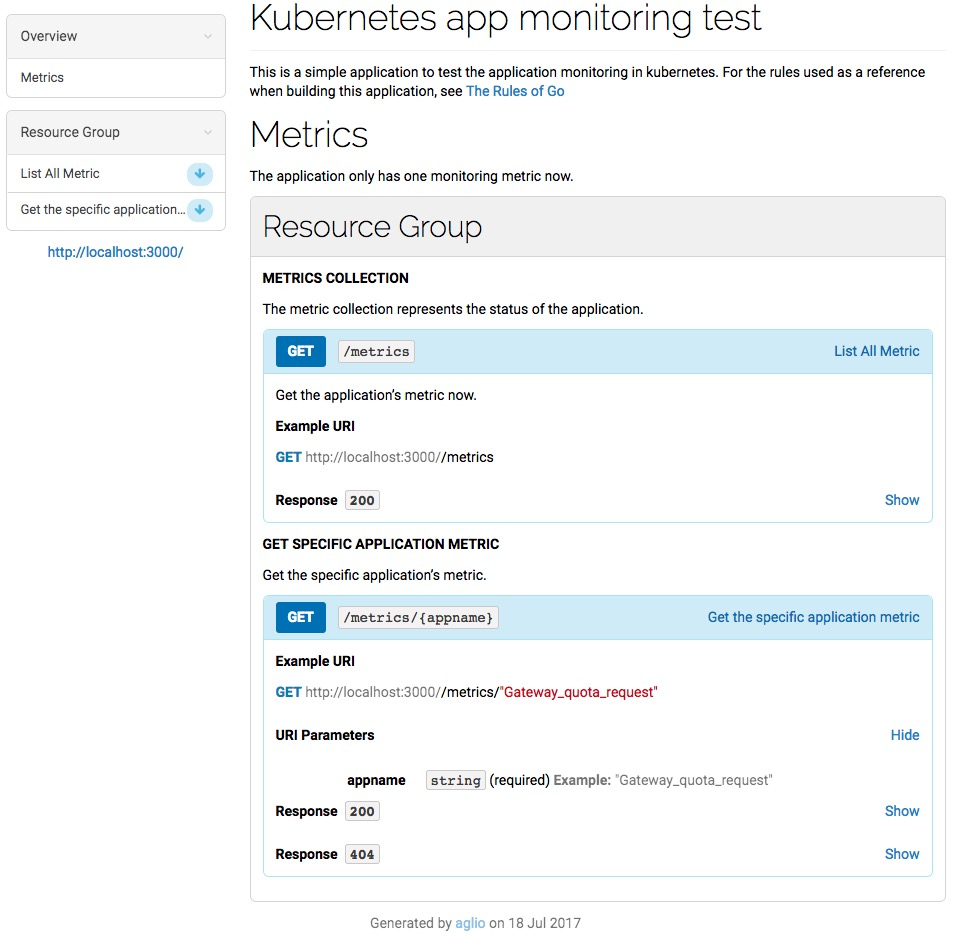

云原生
Table of Contents
定义
云原生（Cloud Native）这个词汇由来已久，以致于何时出现已无据可考
云原生开始大规模出现在受众视线中，与 Pivotal 提出的云原生应用的理念有着莫大的关系 现在谈到云原生，更多的指的是一种文化，而不具象为哪些技术体系 Pivotal 推出过 Pivotal Cloud Foundry 云原生应用平台和 Spring 开源 Java 开发框架，成为云原生应用架构中先驱者和探路者 Pivotal 是云原生应用平台第一股，2018 年在纽交所上市，2019 年底被 VMWare 以 27 亿美元收购，加入到 VMware 新的产品线 Tanzu
Pivotal 最初的定义
早在 2015 年 Pivotal 公司的 Matt Stine 写了一本叫做 迁移到云原生应用架构 的小册子，其中探讨了云原生应用架构的几个主要特征：
- 符合 12 因素应用
- 面向微服务架构
- 自服务敏捷架构
- 基于 API 的协作
- 抗脆弱性
CNCF 最初的定义
到了 2015 年 Google 主导成立了 云原生计算基金会 （CNCF），起初 CNCF 对云原生（Cloud Native）的定义包含以下三个方面：
- 应用容器化
- 面向微服务架构
- 应用支持 容器的编排调度
重定义
到了 2018 年，随着近几年来云原生生态的不断壮大，所有主流云计算供应商都加入了该基金会，且从 Cloud Native Landscape 中可以看出云原生有意蚕食原先非云原生应用的部分。CNCF 基金会中的会员以及容纳的项目越来越多，该定义已经限制了云原生生态的发展，CNCF 为云原生进行了重新定位。以下是 CNCF 对云原生的重新定义（中英对照）：
Cloud native technologies empower organizations to build and run scalable applications in modern, dynamic environments such as public, private, and hybrid clouds. Containers, service meshes, microservices, immutable infrastructure, and declarative APIs exemplify this approach
云原生技术有利于各组织在公有云、私有云和混合云等新型动态环境中，构建和运行可弹性扩展的应用。云原生的代表技术包括容器、服务网格、微服务、不可变基础设施和声明式 API
These techniques enable loosely coupled systems that are resilient, manageable, and observable. Combined with robust automation, they allow engineers to make high-impact changes frequently and predictably with minimal toil.
这些技术能够构建容错性好、易于管理和便于观察的松耦合系统。结合可靠的自动化手段，云原生技术使工程师能够轻松地对系统作出频繁和可预测的重大变更
The Cloud Native Computing Foundation seeks to drive adoption of this paradigm by fostering and sustaining an ecosystem of open source, vendor-neutral projects. We democratize state-of-the-art patterns to make these innovations accessible for everyone
云原生计算基金会（CNCF）致力于培育和维护一个厂商中立的开源生态系统，来推广云原生技术。我们通过将最前沿的模式民主化，让这些创新为大众所用
总结
关于什么是云原生的争论还在进行中，有种看法是云原生是一种行为方式和设计理念 究其本质，凡是能够提高云上资源利用率和应用交付效率的行为或方式都是云原生的
云计算的发展史就是一部云原生化的历史：
- Kubernetes 开启了云原生 1.0 的序幕
- 服务网格 Istio 的出现，引领了后 Kubernetes 时代的微服务
- serverless 的再次兴起，使得云原生从基础设施层不断向应用架构层挺进，我们正处于一个云原生 2.0 的新时代
设计哲学
云原生一词已经被过度的采用，很多软件都号称是云原生，很多打着云原生旗号的会议也如雨后春笋般涌现
云原生本身甚至不能称为是一种架构，它首先是一种基础设施，运行在其上的应用称作云原生应用，只有符合云原生设计哲学的应用架构才叫云原生应用架构
设计理念
云原生系统的设计理念如下:
- 面向 分布式 设计 Distribution ：容器、微服务、API 驱动的开发
- 面向 配置 设计 Configuration ：一个镜像，多个环境配置
- 面向 韧性 设计 Resistancy ：故障容忍和自愈
- 面向 弹性 设计 Elasticity ：弹性扩展和对环境变化（负载）做出响应
- 面向 交付 设计 Delivery ：自动拉起，缩短交付时间
- 面向 性能 设计 Performance ：响应式，并发和资源高效利用
- 面向 自动化 设计 Automation ：自动化的 DevOps
- 面向 诊断性 设计 Diagnosability ：集群级别的日志、metric 和追踪
- 面向 安全性 设计 Security ：安全端点、API Gateway、端到端加密；
以上的设计理念很多都是继承自分布式应用的设计理念，虽然有如此多的理念但是仍然无法辨认什么样的设施才是云原生基础设施 不过可以先用排除法，先来解释什么不是云原生基础设施
什么不是云原生基础设施？
云原生基础设施不等于在公有云上运行的基础设施
光是租用服务器并不会使您的基础设施云原生化 管理 IaaS 的流程与运维物理数据中心没什么两样，将现有架构迁移到云上也未必能获得回报
云原生不是指在容器中运行应用程序
Netflix 率先推出云原生基础设施时，几乎所有应用程序部署在虚拟机中，而不是在容器中
改变应用程序的打包方式并不意味着就会增加自治系统的可扩展性和优势
即使应用程序是通过 CI/CD 渠道自动构建和部署的，也不意味着您就可以从增强 API 驱动部署的基础设施中受益
这也并不意味着您只能运行容器编排器（例如 Kubernetes 和 Mesos）
术语 “调度器” 和 “编排器” 通常可以互换使用。在大多数情况下，编排器负责集群中的所有资源利用（例如：存储，网络和 CPU）。该术语典型地用于描述执行许多任务的产品，如健康检查和云自动化 容器编排器提供了云原生基础设施所需的许多平台功能，但并未按预期方式使用这些功能：这意味着您的应用程序会在一组服务器上运行，被动态调度 虽然这是一个非常好的起步，但仍有许多工作要做
云原生不是微服务或基础设施即代码：
微服务意味着更快的开发周期和更小的独特功能 但是单片应用程序可以具有相同的功能，使其能够通过软件有效管理，并且还可以从云原生基础设施中受益
基础设施即代码以机器可解析语言或领域特定语言（DSL）定义、自动化您的基础设施
将代码应用于基础架构的传统工具包括配置管理工具（例如 Chef 和 Puppet） 这些工具在自动执行任务和提供一致性方面有很大帮助，但是它们在提供必要的抽象来描述超出单个服务器的基础设施方面存在缺陷 配置管理工具一次自动化一台服务器，并依靠人员将服务器提供的功能绑定在一起，这将人类定位为基础设施规模的潜在瓶颈 这些工具也不会使构建完整系统所需的云基础设施（例如存储和网络）的额外部分自动化
尽管配置管理工具为操作系统的资源（例如软件包管理器）提供了一些抽象，但它们并没有抽象出足够的底层操作系统来轻松管理它
如果一位工程师想要管理系统中的每个软件包和文件，这将是一个非常艰苦的过程，并且对于每个配置变体都是独一无二的 同样，定义不存在或不正确的资源的配置管理仅消耗系统资源并且不能提供任何价值
虽然配置管理工具可以帮助自动化部分基础设施，但它们无法更好地管理应用程序
在后面的章节中通过查看部署，管理，测试和操作基础架构的流程，探讨云原生基础设施的不同之处 但首先，将了解哪些应用程序是成功的以及应该何时与原生基础设施一起使用
云原生应用程序
就像云改变了业务和基础设施之间的关系一样，云原生应用程序也改变了应用程序和基础设施之间的关系
我们需要了解与传统应用程序相比，云本身有什么不同，因此我们需要了解它们与基础设施的新关系
云原生应用程序被 设计 为在 平台 上运行，并设计用于 弹性 ， 敏捷 性， 可操作 性和 可观察 性：
- 弹性包含失败而不是试图阻止它们；它利用了在平台上运行的动态特性
- 敏捷性允许快速部署和快速迭代
- 可操作性从应用程序内部控制应用程序生命周期，而不是依赖外部进程和监视器
- 可观察性提供信息来回答有关应用程序状态的问题
云原生应用程序的定义仍在发展中。还有像 CNCF 这样的组织可以提供其他的定义
云原生应用程序通过各种方法获取这些特征。它通常取决于应用程序的运行位置以及企业流程和文化。以下是实现云原生应用程序所需特性的常用方法：
- 微服务
- 健康报告
- 遥测数据
- 弹性
- 声明式的，而不是命令式的
微服务
作为单个实体进行管理和部署的应用程序通常称为单体应用，最初开发应用程序时，单体有很多好处。它们更易于理解，并允许您在不影响其他服务的情况下更改主要功能
随着应用程序复杂性的增长，单体应用的益处逐渐减少。它们变得更难理解，而且失去了敏捷性，因为工程师很难推断和修改代码
对付复杂性的最好方法之一是将明确定义的功能分成更小的服务，并让每个服务独立迭代。这增加了应用程序的灵活性，允许根据需要更轻松地更改部分应用程序。每个微服务可以由单独的团队进行管理，使用适当的语言编写，并根据需要进行独立扩缩容。只要每项服务都遵守强有力的合约，应用程序就可以快速改进和改变
拥有微服务并不意味着您拥有云原生基础设施，虽然微服务是实现您的应用程序灵活性的一种方式，但正如我们之前所说的，它们不是云原生应用程序的必需条件
健康报告
没有人比开发人员更了解应用程序需要什么才能以健康的状态运行，然而很长一段时间，基础设施管理员都试图从他们负责运行的应用程序中找出 “健康” 该怎么定义 如果不实际了解应用程序的健康状况，他们尝试在应用程序不健康时进行监控并发出警报，这往往是脆弱和不完整的
为了提高云原生应用程序的可操作性，应用程序应该暴露健康检查。开发人员可以将其实施为命令或过程信号，以便应用程序在执行自我检查之后响应，或者更常见的是：通过应用程序提供 Web 服务，返回 HTTP 状态码来检查健康状态
Google 的 Borg 报告中列出了一个健康报告的例子： 几乎每个在 Borg 下运行的任务都包含一个内置的 HTTP 服务器，该服务器发布有关任务运行状况和数千个性能指标（如 RPC 延迟）的信息 Borg 会监控运行状况检查 URL 并重新启动不及时响应或返回 HTTP 错误代码的任务 其他数据由监控工具跟踪，用于仪表板和服务级别目标（SLO）违规警报
将健康责任转移到应用程序中使应用程序更容易管理和自动化。应用程序应该知道它是否正常运行以及它依赖于什么（例如，访问数据库）来提供业务价值。这意味着开发人员需要与产品经理合作来定义应用服务的业务功能并相应地编写测试
提供健康检查的应用程序示例包括 Zookeeper 的 ruok 命令和 etcd 的 HTTP / 健康端点
应用程序不仅仅有健康或不健康的状态。它们将经历一个启动和关闭过程，在这个过程中它们应该通过健康检查，报告它们的状态。如果应用程序可以让平台准确了解它所处的状态，平台将更容易知道如何操作它。
一个很好的例子就是当平台需要知道应用程序何时可以接收流量 在应用程序启动时，如果它不能正确处理流量，它就应该表现为未准备好 此额外状态将防止应用程序过早终止，因为如果运行状况检查失败，平台可能会认为应用程序不健康，并且会反复停止或重新启动它
应用程序健康只是能够自动化应用程序生命周期的一部分
除了知道应用程序是否健康之外，您还需要知道应用程序是否正在进行哪些工作。这些信息来自遥测数据
遥测数据
遥测数据是进行决策所需的信息
确实，遥测数据可能与健康报告重叠，但它们有不同的用途 健康报告通知我们应用程序生命周期状态，而遥测数据通知我们应用程序业务目标
测量的指标有时称为服务级指标（SLI）或关键性能指标（KPI）。这些是特定于应用程序的数据，可以确保应用程序的性能处于服务级别目标（SLO）内。遥测和度量标准用于解决以下问题：
- 应用程序每分钟收到多少请求？
- 有没有错误？
- 什么是应用程序延迟？
- 订购需要多长时间？
通常会将数据刮取或推送到时间序列数据库（例如 Prometheus 或 InfluxDB）进行聚合。遥测数据的唯一要求是它将被收集数据的系统格式化。至少，可能最好实施度量标准的 RED 方法，该方法收集应用程序的速率，错误和执行时间：
- 请求率：收到了多少个请求
- 错误：应用程序有多少错误
- 时间：多久才能收到回复
遥测数据应该用于提醒而非健康监测。在动态的、自我修复的环境中，更少关注单个应用程序实例的生命周期，更多关注关于整体应用程序 SLO 的内容
健康报告对于自动应用程序管理仍然很重要，但不应该用于页面工程师 如果 1 个实例或 50 个应用程序不健康，只要满足应用程序的业务需求，我们可能不会收到警报
度量标准可让您知道您是否符合您的 SLO，应用程序的使用方式以及对于您的应用程序来说什么是 “正常”
警报有助于您将系统恢复到已知的良好状态
警报也不应该与日志记录混淆
记录用于调试，开发和观察模式。它暴露了应用程序的内部功能
度量有时可以从日志（例如错误率）计算，但需要额外的聚合服务（例如 ElasticSearch）和处理
弹性
一旦你有遥测和监测数据，你需要确保你的应用程序对故障有适应能力 弹性是基础设施的责任，但云原生应用程序也需要承担部分工作
基础设施被设计为抵制失败。硬件用于需要多个硬盘驱动器，电源以及全天候监控和部件更换以保持应用程序可用。使用云原生应用程序，应用程序有责任接受失败而不是避免失败。
在任何平台上，尤其是在云中，最重要的特性是其可靠性。 ――David Rensin，e ARCHITECT Show：来自 Google 的关于云计算的速成课程
将在云原生应用程序中考虑弹性的两个主要方面：为失败设计和优雅降级
为失败设计
唯一永远不会失败的系统是那些让你活着的系统（例如心脏植入物和刹车系统）
如果您的服务永远不会停止运行，您需要花费太多时间设计它们来抵制故障，并且没有足够的时间增加业务价值 您的 SLO 确定服务需要多长时间。您花费在工程设计上超出 SLO 的正常运行时间的任何资源都将被浪费掉
应该为每项服务测量两个值，即平均无故障时间（MTBF）和平均恢复时间（MTTR）。监控和指标可以让您检测您是否符合您的 SLO，但运行应用程序的平台是保持高 MTBF 和低 MTTR 的关键
在任何复杂的系统中，都会有失败 您可以管理硬件中的某些故障（例如，RAID 和冗余电源），以及某些基础设施中的故障（例如负载平衡器） 但是因为应用程序知道他们什么时候健康，所以他们也应该尽可能地管理自己的失败
设计一个以失败期望为目标的应用程序将比假定可用性的应用程序更具防御性。当故障不可避免时，将会有额外的检查，故障模式和日志内置到应用程序中
知道应用程序可能失败的每种方式是不可能的。假设任何事情都可能并且可能会失败，这是一种云原生应用程序的模式
您的应用程序的最佳状态是健康状态。第二好的状态是失败状态。其他一切都是非二进制的，难以监控和排除故障
Honeycomb 首席执行官 CharityMajors 在她的文章 “Ops：现在每个人都在工作” 中指出：“分布式系统永远不会起作用；它们处于部分退化服务的持续状态。接受失败，设计弹性，保护和缩小关键路径。”
无论发生什么故障，云原生应用程序都应该是可适应的。他们期望失败，所以他们在检测到时进行调整
有些故障不能也不应该被设计到应用程序中（例如，网络分区和可用区故障） 该平台应自主处理未集成到应用程序中的故障域
优雅降级
云原生应用程序需要有一种方法来处理过载，无论它是应用程序还是负载下的相关服务。处理负载的一种方式是优雅降级
站点可靠性工程” 一书中描述了应用程序的优雅降级，因为它提供的响应在负载过重的情况下 “不如正常响应准确或含有较少数据的响应，但计算更容易”
减少应用程序负载的某些方面由基础设施处理
智能负载平衡和动态扩展可以提供帮助，但是在某些时候，您的应用程序可能承受的负载比它可以处理的负载更多 云原生应用程序需要知道这种必然性并作出相应的反应
优雅降级的重点是允许应用程序始终返回请求的答案
如果应用程序没有足够的本地计算资源，并且依赖服务没有及时返回信息，则这是正确的 依赖于一个或多个其他服务的服务应该可用于应答请求，即使依赖于服务不是 当服务退化时，返回部分答案或使用本地缓存中的旧信息进行答案是可能的解决方案
尽管优雅的降级和失败处理都应该在应用程序中实现，但平台的多个层面应该提供帮助。如果采用微服务，则网络基础设施成为需要在提供应用弹性方面发挥积极作用的关键组件
- 可用性数学
云原生应用程序需要在基础设施之上建立一个平台，以使基础设施更具弹性。如果希望将现有应用程序 “提升并转移” 到云中，则应检查云提供商的服务级别协议（SLA），并考虑在使用多个服务时会发生什么情况
让我们拿运行我们的应用程序的云来进行假设。 计算基础设施的典型可用性是每月 99.95％的正常运行时间。这意味着您的实例每天可能会缩短到 43.2 秒，并且仍在您的云服务提供商的 SLA 中 另外，实例的本地存储（例如 EBS 卷）也具有 99.95％的可用性正常运行时间。如果幸运的话，他们都会同时出现故障，但最糟糕的情况是他们可能会在不同的时间停机，让您的实例只有 99.9％的可用性 您的应用程序可能还需要一个数据库，而不是自己安装一个计算可能的停机时间为 1 分 26 秒（99.9％可用性）的情况下，选择可靠性为 99.95％的更可靠的托管数据库。这使您的应用程序的可靠性达到 99.85％，或者每天可能发生 2 分钟和 9 秒的宕机时间 将可用性乘到一起可以快速了解为什么应以不同方式处理云。真正不好的部分是，如果云提供商不符合其 SLA，它将退还其账单中一定比例的退款
虽然您不必为停机支付费用，但我们并不知道世界上存在云计算信用的单一业务。如果您的应用程序的可用性不足以超过您收到的信用额度，那么您应该真正考虑是否应该运行这个应用程序
声明式，非反应式
因为云原生应用程序被设计为在云环境中运行，所以它们与基础设施以及相关依赖应用程序的交互方式不同于传统应用程序。在云原生应用程序中，与任何事物的通信都需要通过网络来进行
很多时候，网络通信是通过 RESTful HTTP 调用完成的，但是也可以通过其他接口实现，比如远程过程调用 (RPC)
传统的应用程序会通过向消息队列发送消息、在共享存储上写入文件或触发本地 shell 脚本来执行自动化任务。通信方法基于发生的事件作出反应（例如，如果用户单击提交，运行提交脚本）并且通常需要存在于同一物理或虚拟服务器上的信息
传统应用程序中的反应式通信通常是构建弹性的一种尝试 如果应用程序（以反应式的方式）在磁盘上或消息队列中写入了一个文件，然后应用程序死亡，那么该消息或文件的结果仍然可以完成
这里并不是说不应该使用像消息队列这样的技术，而是说在动态且经常出现故障的系统中， 不能将它们作为 惟一的弹性层 来依赖
从根本上说，在云原生环境之中，应用程序之间的通信方法应该有所变化 - 这不仅是因为还存在其他方法来构建通信弹性，而是还因为如果要让传统的通信方法在云中实现复制，往往需要做更多工作
当应用程序可以信任通信的弹性时，它们应该放弃反应式并使用声明式。声明式通信信任网络会将消息送达。它也相信应用程序将返回成功或错误
这并不是说让应用程序观察变化不重要，Kubernetes 的控制器对 API 服务器做的就是这个 但是，一旦发现变更，他们就会声明一个新的状态，并相信 API 服务器和 kubelets 会做必要的事情
声明式通信模型由于多种原因而变得更加健壮。最重要的是，它规范了通信模型，并且它将（如何从某种状态到达期望状态的）功能实现从应用程序转移到远程 API 或服务端点。这有助于简化应用程序，并使它们彼此的行为更具可预测性
Serverless
无服务器平台是云原生化的，并被设计为对事件做出反应
他们在云中工作得很好的原因是他们通过 HTTP API 进行通信，（这些 API）是单一用途的函数，并且在它们的调用中是声明性的 该平台还使它们可伸缩并可从云内访问
如何影响基础设施？
云原生应用程序不能直接在 PaaS 上运行或与服务器的操作系统紧密耦合 它们期望在一个拥有大多数自治系统的动态环境中运行
云原生基础设施在提供自主应用管理的 IaaS 之上创建了一个平台。该平台建立在动态创建的基础设施之上，以抽象出单个服务器并促进动态资源分配调度
自动化与自治不一样。自动化使人类对他们所采取的行动产生更大的影响 云原生是关于不需要人类做出决定的自治系统：它仍然使用自动化，但只有在决定了所需的操作之后。只有在系统不能自动确定正确的事情时才应该通知人
具有这些特征的应用程序需要一个能够实际监控，收集度量标准并在发生故障时做出反应的平台
云原生应用程序不依赖于人员设置 ping 检查或创建 Syslog 规则 他们需要从选择基本操作系统或软件包管理器的过程中提取自助服务资源，并依靠服务发现和强大的网络通信来提供丰富的功能体验
Kubernetes 的诞生
众所周知，Kubernetes 是 Google 于 2014 年 6 月基于其内部使用的 Borg 系统开源出来的容器编排调度引擎。其实从 2000 年开始，Google 就开始基于容器研发三个容器管理系统，分别是 Borg、Omega 和 Kubernetes
这篇由 Google 工程师 Brendan Burns、Brian Grant、David Oppenheimer、Eric Brewer 和 John Wilkes 几人在 2016 年发表的《Borg, Omega, and Kubernetes》论文里，阐述了 Google 从 Borg 到 Kubernetes 这个旅程中所获得知识和经验教训
Borg、Omega 和 Kubernetes
Google 从 2000 年初就开始使用容器（Linux 容器）系统，Google 开发出来的第一个统一的容器管理系统在内部称之为 “Borg”，用来管理长时间运行的生产服务和批处理服务。由于 Borg 的规模、功能的广泛性和超高的稳定性，一直到现在 Borg 在 Google 内部依然是主要的容器管理系统。
Google 的第二套容器管理系统叫做 Omega，作为 Borg 的延伸，它的出现是出于提升 Borg 生态系统软件工程的愿望。由于越来越多的应用被开发并运行在 Borg 上，Google 开发了一个广泛的工具和服务的生态系统。它应用到了很多在 Borg 内已经被认证的成功的模式，但是从头开始来搭建以期更为一致的构架。这些系统提供了配置和更新 job 的机制，能够预测资源需求，动态地对在运行中的程序推送配置文件、服务发现、负载均衡、自动扩容、机器生命周期管理、额度管理等。许多 Omega 的创新（包括多个调度器）都被收录进了 Borg
Google 的第三套容器管理系统就是我们所熟知的 Kubernetes，它是针对在 Google 外部的对 Linux 容器感兴趣的开发者以及 Google 在公有云底层商业增长的考虑而研发的。和 Borg、Omega 完全是谷歌内部系统相比，Kubernetes 是开源的。像 Omega 一样，Kubernetes 在其核心有一个被分享的持久存储，有组件来检测相关 object 的变化。跟 Omega 不同的是，Omega 把存储直接暴露给信任的控制平面的组件，而在 Kubernete 中，提供了完全由特定领域更高层面的版本控制、认证、语义、策略的 REST API 接口，以服务更多的用户。更重要的是，Kubernetes 是由一群底层开发能力更强的开发者开发的，他们主要的设计目标是用更容易的方法去部署和管理复杂的分布式系统，同时仍能从容器提升的效率中受益。
2014 年 Kubernetes 正式开源，2015 年被作为初创项目贡献给了云原生计算基金会（CNCF），从此开启了 Kubernetes 及云原生化的大潮
Kubernetes概览
2017年9月，Mesos宣布支持Kubernetes，而在2017年10月份的DockerCon EU上，Docker公司宣布官方同时支持Swarm和Kubernetes容器编排 Kubernetes已然成为容器编排调度的标准
发展历史
云计算的发展历程引入云原生计算，请看下图：

云原生应用到2020年将比目前至少翻一番，下图是Marc Wilczek的调查报告：

云计算介绍
云计算包含的内容十分繁杂，也有很多技术和公司牵强附会说自己是云计算公司，说自己是做云的，实际上可能风马牛不相及
云计算就是一种 配置资源 的方式，根据资源配置方式的不同可以把云计算从宏观上分为以下三种类型：
- IaaS：这是为了想要建立自己的商业模式并进行自定义的客户，例如亚马逊的EC2、S3存储、Rackspace虚拟机等都是IaaS
- PaaS：工具和服务的集合，对于想用它来构建自己的应用程序或者想快速得将应用程序部署到生产环境而不必关心底层硬件的用户和开发者来说是特别有用的，比如Cloud Foundry、Google App Engine、Heroku等
- SaaS：终端用户可以直接使用的应用程序。这个就太多，生活中用到的很多软件都是SaaS服务，只要基于互联网来提供的服务基本都是SaaS服务，有的服务是免费的，比如Google Docs，还有更多的是根据购买的Plan和使用量付费，比如GitHub、各种云存储
微服务介绍
微服务（Microservices）这个词比较新颖，但是其实这种架构设计理念早就有了。微服务是一种 分布式架构 设计理念，为了推动细粒度服务的使用，这些服务要能协同工作，每个服务都有自己的生命周期。一个微服务就是一个独立的实体，可以独立的部署在PAAS平台上，也可以作为一个独立的进程在主机中运行。服务之间通过API访问，修改一个服务不会影响其它服务
下面会谈到Kubernetes与微服务的关系，其中Kubernetes的service天生就适合于微服务
云原生概念介绍
云原生准确来说是一种文化，更是一种潮流，它是云计算的一个必然导向 它的意义在于让云成为云化战略成功的基石，而不是阻碍，如果业务应用上云之后开发和运维人员比原先还痛苦，成本还高的话，这样的云我们宁愿不上
下面是Cloud Native概念思维导图：

自从云的概念开始普及，许多公司都部署了实施云化的策略，纷纷搭建起云平台，希望完成传统应用到云端的迁移 但是这个过程中会遇到一些技术难题，上云以后，效率并没有变得更高，故障也没有迅速定位
为了解决传统应用升级缓慢、架构臃肿、不能快速迭代、故障不能快速定位、问题无法快速解决等问题，云原生这一概念横空出世。云原生可以改进应用开发的效率，改变企业的组织结构，甚至会在文化层面上直接影响一个公司的决策。另外，云原生也很好地解释了云上运行的应用应该具备什么样的架构特性： 敏捷性 、 可扩展性 、 故障可恢复性
综上所述，云原生应用应该具备以下几个关键词：
- 敏捷
- 可靠
- 高弹性
- 易扩展
- 故障隔离保护
- 不中断业务持续更新
以上特性也是云原生区别于传统云应用的优势特点
Kubernetes与云原生的关系
Kuberentes可以说是乘着Docker和微服务的东风，一经推出便迅速蹿红，它的很多设计思想都契合了微服务和云原生应用的设计法则，这其中最著名的就是开发了Heroku PaaS平台的工程师们总结的 Twelve-factor App了
下面将讲解Kubernetes设计时是如何按照了十二因素应用法则，并给出Kubernetes中的应用示例，并附上一句话简短的介绍。
介绍
Kubernetes是Google基于Borg开源的容器编排调度引擎，作为CNCF（Cloud Native Computing Foundation）最重要的组件之一，它的目标不仅仅是一个编排系统，而是提供一个规范，可以让你来描述集群的架构，定义服务的最终状态，Kubernetes可以帮你将系统自动得达到和维持在这个状态
更直白的说，Kubernetes用户可以通过编写一个yaml或者json格式的配置文件，也可以通过工具/代码生成或直接请求Kubernetes API创建应用，该配置文件中包含了用户想要应用程序保持的状态，不论整个Kubernetes集群中的个别主机发生什么问题，都不会影响应用程序的状态，你还可以通过改变该配置文件或请求Kubernetes API来改变应用程序的状态
12因素应用
12因素应用提出已经有几年的时间了，每个人对其可能都有自己的理解，切不可生搬硬套 不一定所有云原生应用都必须符合这12条法则，其中有几条法则可能还有点争议，有人对其的解释和看法不同
不要孤立的来看这每一个因素，将其与自己软件开发流程联系起来，这12个因素大致就是按照软件从开发到交付的流程顺序来写的：

- 基准代码：每个代码仓库（repo）都生成docker image保存到镜像仓库中，并使用唯一的ID管理，在Jenkins中使用编译时的ID
- 依赖：显式的声明代码中的依赖，使用软件包管理工具声明，比如Go中的Glide
- 配置：将配置与代码分离，应用部署到Kubernetes中可以使用容器的环境变量或ConfigMap挂载到容器中
- 后端服务：把后端服务当作附加资源，实质上是计算存储分离和降低服务耦合，分解单体应用
- 构建、发布、运行：严格分离构建和运行，每次修改代码生成新的镜像，重新发布，不能直接修改运行时的代码和配置
- 进程：应用程序进程应该是无状态的，这意味着再次重启后还可以计算出原先的状态
- 端口绑定：在Kubernetes中每个Pod都有独立的IP，每个运行在Pod中的应用不必关心端口是否重复，只需在service中指定端口，集群内的service通过配置互相发现
- 并发：每个容器都是一个进程，通过增加容器的副本数实现并发
- 易处理：快速启动和优雅终止可最大化健壮性，Kuberentes优秀的Pod生存周期控制
- 开发环境与线上环境等价：在Kubernetes中可以创建多个namespace，使用相同的镜像可以很方便的复制一套环境出来，镜像的使用可以很方便的部署一个后端服务
- 日志：把日志当作事件流，使用stdout输出并收集汇聚起来，例如到ES中统一查看
- 管理进程：后台管理任务当作一次性进程运行，kubectl exec进入容器内部操作
另外，Cloud Native Go 这本书的作者，CapitalOne公司的Kevin Hoffman在TalkingData T11峰会上的High Level Cloud Native的演讲中讲述了云原生应用的15个因素
在原先的12因素应用的基础上又增加了如下三个因素：
- API优先
- 服务间的合约
- 团队协作的规约
- 文档化、规范化
- RESTful或RPC
- 监控
- 实时监控远程应用
- 应用性能监控（APM）
- 应用健康监控
- 系统日志
- 不建议在线Debug
- 认证授权
- 不要等最后才去考虑应用的安全性
- 详细设计、明确声明、文档化
- Bearer token、OAuth、OIDC认证
- 操作审计
Kubernetes中的资源管理与容器设计模式
Kubernetes通过声明式配置，真正让开发人员能够理解应用的状态，并通过同一份配置可以立马启动一个一模一样的环境，大大提高了应用开发和部署的效率 其中Kubernetes设计的多种资源类型可以帮助我们定义应用的运行状态，并使用资源配置来细粒度的明确限制应用的资源使用
而容器生态的成熟是 Kubernetes 诞生的前提，在谈到容器的设计模式之前先来了解下容器生态，请看下图：

容器的设计模式
Kubernetes提供了多种 资源对象 ，用户可以根据自己应用的特性加以选择。这些对象有：
| 类别 | 名称 |
| 资源对象 | Pod、ReplicaSet、ReplicationController、Deployment、StatefulSet、DaemonSet、Job、CronJob、HorizontalPodAutoscaler |
| 配置对象 | Node、Namespace、Service、Secret、ConfigMap、Ingress、Label、CustomResourceDefinition、 ServiceAccount |
| 存储对象 | Volume、Persistent Volume |
| 策略对象 | SecurityContext、ResourceQuota、LimitRange |
在 Kubernetes 系统中， Kubernetes 对象 是 持久化 的条目。Kubernetes 使用这些条目去表示整个集群的状态。特别地，它们描述了如下信息：
- 什么容器化应用在运行（以及在哪个 Node 上）
- 可以被应用使用的资源
- 关于应用如何表现的策略，比如重启策略、升级策略，以及容错策略
Kubernetes 对象是 目标性记录 ：一旦创建对象，Kubernetes 系统将持续工作以确保对象存在。通过创建对象，可以有效地告知 Kubernetes 系统，所需要的集群工作负载看起来是什么样子的，这就是 Kubernetes 集群的 期望状态
资源限制与配额
两层的资源限制与配置
- Pod级别，最小的资源调度单位
- Namespace级别，限制资源配额和每个Pod的资源使用区间
管理Kubernetes集群
手工部署Kubernetes是一个很艰巨的活，需要了解： 网络配置 Docker的安装与使用 镜像仓库的构建 角色证书的创建 Kubernetes的基本原理和构成 Kubernetes应用程序的yaml文件编写等
部署Kubernetes集群
使用二进制部署 kubernetes 集群的所有组件和插件，而不是使用 kubeadm 等自动化方式来部署集群，同时开启了集群的TLS安全认证
这样可以帮助了解系统各组件的交互原理，进而能快速解决实际问题
集群详情
- Kubernetes 1.6.0
- Docker 1.12.5（使用yum安装）
- Etcd 3.1.5
- Flanneld 0.7 vxlan 网络
- TLS 认证通信 (所有组件，如 etcd、kubernetes master 和 node)
- RBAC 授权
- kubelet TLS BootStrapping
- kubedns、dashboard、heapster(influxdb、grafana)、EFK(elasticsearch、fluentd、kibana) 集群插件
- 私有Docker镜像仓库Harbor（请自行部署，Harbor提供离线安装包，直接使用docker-compose启动即可）
步骤介绍
- 创建 TLS 证书和秘钥
- 创建kubeconfig文件
- 创建高可用etcd集群
- 安装kubectl命令行工具
- 部署master节点
- 安装flannel网络插件
- 部署node节点
- 安装kubedns插件
- 安装dashboard插件
- 安装heapster插件
- 安装EFK插件
服务发现与负载均衡
Kubernetes在设计之初就充分考虑了针对容器的服务发现与负载均衡机制，提供了Service资源，并通过kube-proxy配合cloud provider来适应不同的应用场景。随着Kubernetes用户的激增，用户场景的不断丰富，又产生了一些新的负载均衡机制。目前，Kubernetes中的负载均衡大致可以分为以下几种机制，每种机制都有其特定的应用场景：
- Service：直接用Service提供cluster内部的负载均衡，并借助cloud provider提供的LB提供外部访问
- Ingress：还是用Service提供cluster内部的负载均衡，但是通过自定义LB提供外部访问
- Service Load Balancer：把load balancer直接跑在容器中，实现Bare Metal的Service Load Balancer
- Custom Load Balancer：自定义负载均衡，并替代kube-proxy，一般在物理部署Kubernetes时使用，方便接入公司已有的外部服务
持续集成与发布
应用构建和发布流程说明：
- 用户向Gitlab提交代码，代码中必须包含Dockerfile
- 将代码提交到远程仓库
- 用户在发布应用时需要填写git仓库地址和分支、服务类型、服务名称、资源数量、实例个数，确定后触发Jenkins自动构建
- Jenkins的CI流水线自动编译代码并打包成Docker镜像推送到Harbor镜像仓库
- Jenkins的CI流水线中包括了自定义脚本，根据已准备好的Kubernetes的YAML模板，将其中的变量替换成用户输入的选项
- 生成应用的Kubernetes YAML配置文件
- 更新Ingress的配置，根据新部署的应用的名称，在Ingress的配置文件中增加一条路由信息
- 更新PowerDNS，向其中插入一条DNS记录，IP地址是边缘节点的IP地址。关于边缘节点，请查看边缘节点配置
- Jenkins调用Kubernetes的API，部署应用
日志收集与监控
基于现有的ELK日志收集方案，稍作改造，选用 filebeat 来收集日志，可以作为 sidecar 的形式跟应用运行在同一个Pod中，比较轻量级消耗资源比较少

安全性与权限管理
Kubernetes是一个多租户的云平台，因此必须对用户的权限加以限制，对用户空间进行隔离。Kubernetes中的隔离主要包括这几种：
- 网络隔离：需要使用网络插件，比如flannel, calico
- 资源隔离：kubernetes原生支持资源隔离，pod就是资源隔离和调度的最小单位，同时使用namespace限制用户空间和资源限额
- 身份隔离：使用RBAC-基于角色的访问控制，多租户的身份认证和权限控制
开发Kubernetes原生应用步骤
当有了一个kubernetes集群后，如何在上面开发和部署应用，应该遵循怎样的流程？
下面将展示如何使用go语言开发和部署一个Kubernetes native应用，并使用wercker进行持续集成与持续发布 将以一个很简单的前后端访问，获取伪造数据并展示的例子来说明
云原生应用开发示例
按照如下步骤来开发部署一个Kubernetes原生应用并将它部署到Kubernetes集群上开放给集群外访问：
- 服务API的定义
- 使用Go语言开发Kubernetes原生应用
- 一个持续构建与发布工具与环境
- 使用traefik和VIP做边缘节点提供外部访问路由
两个示例用于演示，开发部署一个伪造的 metric 并显示在 web 页面上，包括两个service：
- k8s-app-monitor-test：生成模拟的监控数据，发送http请求，获取json返回值
- K8s-app-monitor-agent：获取监控数据并绘图，访问浏览器获取图表
定义API生成API文档
使用 API blueprint 格式，定义API文档，格式类似于 markdown，再使用 aglio 生成HTML文档

如何迁移到云原生应用架构
迁移到云原生应用架构指南
指出了迁移到云原生应用架构需要做出的企业文化、组织架构和技术变革，并给出了迁移指南。主要讨论的应用程序架构包括：
- 十二因素应用程序：云原生应用程序架构模式的集合
- 微服务：独立部署的服务，只做一件事情
- 自治服务的敏捷基础设施：快速，可重复和一致地提供应用环境和后台服务的平台
- 基于API的协作：发布和版本化的API，允许在云原生应用程序架构中的服务之间进行交互
- 抗压性：根据压力变强的系统
迁移案例解析

步骤说明：
- 将原有应用拆解为服务
- 定义服务的接口/API通信方式
- 编写启动脚本作为容器的进程入口
- 准备应用配置文件
- 容器化、制作镜像
- 准备Kubernetes YAML文件
- 如果有外置配置文件需要创建ConfigMap或Secret存储
Service Mesh
Service Mesh现在一般被翻译作服务网格，目前主流的Service Mesh有如下几款：
- Istio：IBM、Google、Lyft共同开源，详细文档见Istio官方文档
- Linkerd：原Twitter工程师开发，现为CNCF中的项目之一
- Envoy：Lyft开源的，可以在Istio中使用Sidecar模式运行
- Conduit：同样由Buoyant开源的轻量级的基于Kubernetes的Service Mesh
什么是Service Mesh
如果用一句话来解释什么是 Service Mesh，可以将它比作是 应用程序或者说微服务间的 TCP/IP ，负责服务之间的网络 调用 、 限流 、 熔断 和 监控
对于编写应用程序来说一般无须关心 TCP/IP 这一层（比如通过 HTTP 协议的 RESTful 应用） 同样使用 Service Mesh 也就无须关心服务之间的那些原来是通过应用程序或者其他框架实现的事情，现在只要交给 Service Mesh 就可以了

Service Mesh使用指南
使用案例
Kubernetes作为云原生计算的基本组件之一，开源2年时间以来热度与日俱增，它可以跟我们的生产结合，擦出很多火花，比如FaaS和Serverless类应用，都很适合运行在kubernetes上
DevOps
下面是社区中Kubernetes开源爱好者的分享内容，我觉得是对Kubernetes在DevOps中应用的很好的形式值得大家借鉴
真正践行DevOps，让开发人员在掌握自己的开发和测试环境，让环境一致，让开发效率提升，让运维没有堆积如山的tickets，让监控更加精准，从Kubernetes平台开始
行动指南
- 根据环境（比如开发、测试、生产）划分namespace，也可以根据项目来划分
- 为每个用户划分一个namespace、创建一个serviceaccount和kubeconfig文件，不同namespace间的资源隔离，目前不隔离网络，不同namespace间的服务可以互相访问
- 创建yaml模板，降低编写Kubernetes yaml文件编写难度
- 在kubectl命令上再封装一层，增加用户身份设置和环境初始化操作，简化kubectl命令和常用功能
- 管理员通过dashboard查看不同namespace的状态，也可以使用它来使操作更便捷
- 所有应用的日志统一收集到ElasticSearch中，统一日志访问入口
- 可以通过Grafana查看所有namespace中的应用的状态和kubernetes集群本身的状态
- 需要持久化的数据保存在分布式存储中，例如GlusterFS或Ceph中
使用Kibana查看日志
日志字段中包括了应用的标签、容器名称、主机名称、宿主机名称、IP地址、时间：